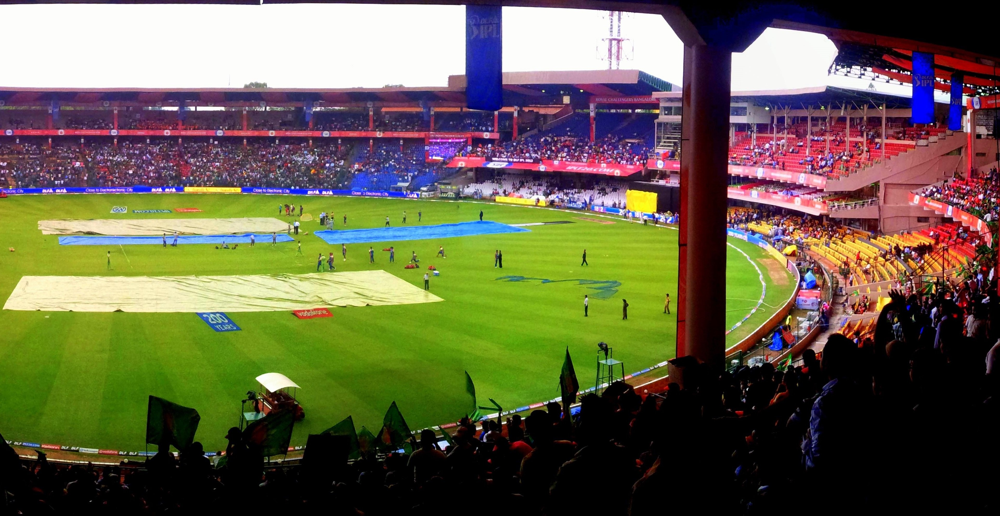
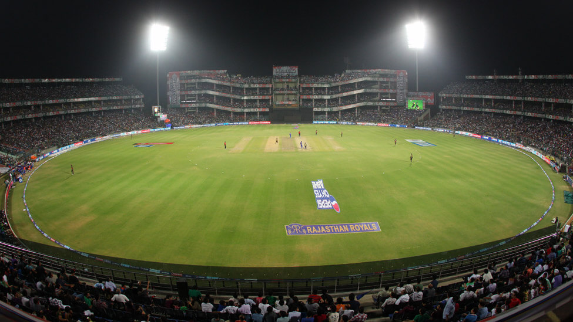
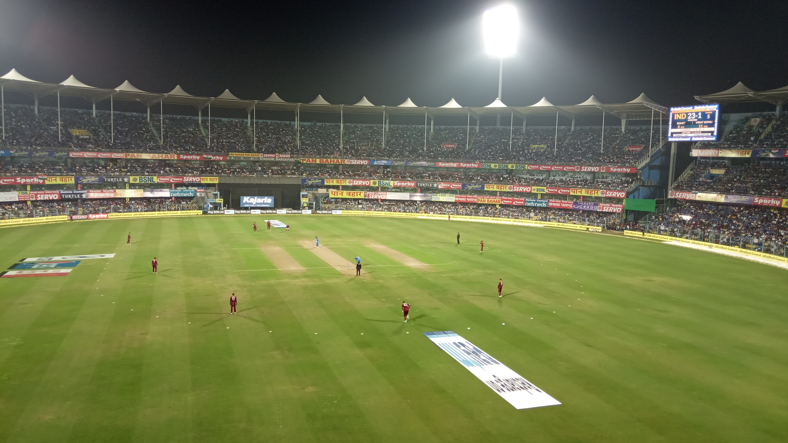

M. A. Chidambaram Stadium
| Capacity | 50000 |
| Known as | Chepauk; Madras Cricket Club Ground |
| Ends | Anna Pavilion End, V Pattabhiraman Gate End |
| Location | Chennai, India |
| Home to | Tamil Nadu, Chennai Super Kings |
| Floodlights | Yes |
The first ever Ranji Trophy game was played at this venue. Madras' AG Ram Singh ran through
Mysore with a 11-wicket haul in the match.
For a long time, Chepauk hosted the famous Pongal (Harvest) Test.
It used to be played in the month of January.
India registered their first ever Test win at this stadium, when they beat England by an
innings and 8 runs.
The second tied Test in the history of cricket was played here, between India and Australia in 1986.
Saeed Anwar recorded the highest individual score in ODIs - 194 - at this ground. The milestone
remained for more than a decade, before Sachin Tendulkar scored 200 against South Africa.
Sunil Gavaskar went past Don Bradman's 29 Test hundreds at this very venue.
This ground was also witness to one of Sachin Tendulkar's greatest Test innings. The Indian
maestro battled back spasms and almost took his side home against Pakistan in 1999. But his
136 went in vain as the arch-rivals sealed a 12-run victory.
|
 |
Eden Gardens
| Capacity | 63000 |
| Ends | High Court End, Pavilion End |
| Location | Kolkata, India |
| Home to | Bengal, Kolkata Knight Riders |
| Floodlights | Yes |
The highest ODI score by any batsman was made on this ground. Rohit Sharma smashed 264 against Sri Lanka in November, 2014.
Eden Gardens has hosted as many as 39 Tests - the most by any venue in India.
|
 |
HPCA Stadium
| Capacity | 23000 |
| Ends | River End, College End |
| Location | Dharamsala, India |
| Home to | Himachal Pradesh, Kings XI Punjab |
| Floodlights | Yes |
Sitting at 1457 metres above sea level, the Himachal Pradesh Cricket Association
(HPCA) Stadium in Dharamsala, is widely regarded as the most picturesque cricket
stadium in the world. With the beautiful Dhauladhar mountain range lacing its
backdrop, the HPCA stadium offers one of the most stunning views to its visitors,
especially when the mighty peaks are blanketed in snow.
Even though international cricket made its first appearance here only in 2013,
the HPCA stadium has already established itself as a world-class cricket destination
in a very short time. Best known for being the abode of the Dalai Lama, this
quaint little town first found its place on the cricketing world map in 2010,
when Chennai Super Kings locked horns with Kings XI Punjab in the Indian Premier
League (IPL).
|
 |
M.Chinnaswamy Stadium
| Capacity | 40000 |
| Known as | Karnataka State Cricket Association Stadium |
| Ends | Pavilion End, BEML End |
| Location | Bengaluru, India |
| Home to | Karnataka, Royal Challengers Bengaluru |
| Floodlights | Yes |
M Chinnaswamy stadium, lying in the heart of the state capital, continues to remain one
of the biggest cricketing centres of the country. Starting off as a humble abode, the
stadium has now turned out to be a marquee venue, capable of hosting some of the biggest
cricket matches to be played in the country. Home to some of the classiest match-winners
of India, Chinnaswamy stadium, in its debut Test match had the honour of hosting the
West Indies in 1974. The match also marked the emergence of two modern legends,
Gordon Greenidge and Sir Viv Richards. Since then, the stadium has regularly hosted
Tests, although it's unfortunately considered as one of India's unluckiest venues.
Rohit Sharma scored his first ODI double hundred on this ground, a fine 209 against
Australia in 2013.
The venue was also the scene of Ireland's biggest win. They beat England in the 2011
World Cup encounter after Kevin O'Brien smashed a 50-ball 100, the fastest hundred
in a WC match.
|
 |
ACA–VDCA Cricket Stadium
| Capacity | 28000 |
| Ends | Vizzy End, DV Subba Rao End |
| Location | Visakhapatnam, India |
| Home to | Andhra Pradesh, Sunrisers Hyderabad |
| Floodlights | Yes |
ACA-VDCA Cricket Stadium, located in Pothinamallayya Palem, Visakhapatnam, is surrounded
by the blissful facade of the picturesque hills and the leafy ramble of trees swaying in
breeze. It is the home ground of Sunrisers Hyderabad in the Indian Premier League. The
stadium built in 2003 is known for its excellent drainage facilities. The well-manicured,
lush-green outfield at the ground has also come in for praise. The seating capacity is
expected to be increased to 50,000. In fact, the Test status was also granted recently.
It is the ninth ground to be awarded the Test status in India.
The first ever international match at this stadium took place between arch-rivals India
and Pakistan in April 2005. It was a game in which MS Dhoni announced his arrival at the
highest level with a blistering innings of 148. Since then, it has gone on to host five
ODIs, one T20I and IPL fixtures related to Deccan Chargers in 2012. Sunrisers Hyderabad
are expected to play three games in 2015 in the IPL.
|
 |
Feroz Shah Kotla
| Capacity | 48000 |
| Known as | Arun Jaitley, Willingdon Pavilion |
| Ends | Stadium End, Pavilion End |
| Location | Delhi, India |
| Home to | Delhi, Sunrisers Hyderabad |
| Floodlights | Yes |
The stadium witnessed Anil Kumble's famous 10/74 in an innings, against Pakistan in
1999. With these figures, Kumble became only the second bowler after Jim Laker to
take all the ten wickets in an innings.
In 1983, Sunil Gavaskar scored his 29th Test ton at this venue, equalling Sir Donald
Bradman's record for the most number of centuries in Test cricket.
In 2005, Sachin Tendulkar went past Sunil Gavaskar's record of 34 Test centuries,
registering his 35th Test ton in the second Test against Sri Lanka at this venue.
|
 |
Nehru Stadium
| Capacity | 40000 |
| Ends | Tilak Road End, Laxmi Road End |
| Location | Pune, India |
| Home to | Tamil Nadu |
| Floodlights | Yes |
The Nehru Stadium was built and established in 1969, in the first match between
Bill Lawry’s Australia and West Zone. The Australians had come to tour India in 1969.
Curated by Chandu Borde, the stadium has been witnessed to over 11 ODIs, the first
being held on 5 December 1984 between India and England. England chased down India’s
target of 215 with 4 wickets in hand.
The Western Zone team used the stadium for their matches from 1975-2001. The stadium
did not have floodlights for a very long time and had hence hosted only ODIs.
Recent renovations by the Pune Cricket Association have helped bring the stadium
floodlights in order to be considered as an international cricketing venue in the future.
|
 |
Barabati Stadium
| Capacity | 45000 |
| Ends | Mahanadi River End River End, Pavilion End |
| Location | Cuttak, India |
| Home to | Odisha |
| Floodlights | Yes |
The Barabati stadium, situated in Cuttack, Odisha, has been a host to numerous international
matches and the ground is of truly rich sporting heritage. It is the home ground of the Odisha
team. It has also staged IPL matches. Even football matches have been held at the stadium.
In fact, the Barabati stadium is one of the oldest grounds in India. It can be encapsulated
by the fact that back in 1961, MCC had played a game here against East Zone. The West Indies
too had played a tour game in 1974-75. International cricket came to the Barabati stadium
in 1982, when India beat England to clinch the ODI series 2-1. Interestingly, It was the
third ODI held in this country.
|
 |